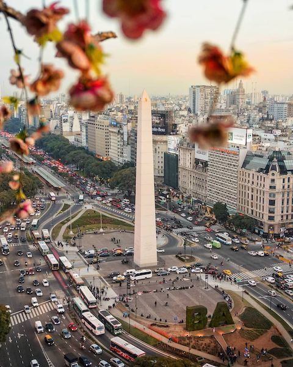

Buenos Aires o la Ciudad Autónoma de Buenos Aires (CABA), es la ciudad
capital de la República Argentina.
Es la mayor ciudad de Argentina, donde se concentra la mayoría de la
población y de la actividad económica. Es el centro político a la
nación, a pesar de estar constituida como una República Federal. Después
de
São Paolo en
Brasil,
es la segunda ciudad más poblada de Sudamérica y la que
tiene la mayor renta per cápita de la región.
Su nombre proviene del culto a la Madonna di Bonaira italiana, extendido
entre los marineros ibéricos de la época, cuyo nombre se castellanizó
como Buen Ayre.
A los oriundos de Buenos Aires se les conoce como porteños. Sus
poblaciones satelitales se denominan en conjunto Gran Buenos Aires.
Gobierno de Buenos Aires
Buenos Aires es la capital federal de la Argentina.Es importante
señalar que
no se trata de la capital de la Provincia de Buenos Aires, aunque
lleve el mismo nombre
Goza de un régimen autonómico que le permite tener sus propios poderes
públicos: ejecutivo, legislativo y judicial. El funcionamiento de
estos poderes públicos se rige por la Constitución de la Ciudad de
Buenos Aires de 1996. La ciudad se encuentra dividida en 15 comunas,
que agrupan los distintos 48 barrios porteños.
La reforma constitucional argentina de 1994 otorgó a la ciudad de
Buenos Aires un nuevo estatus jurídico al disponer que "La Ciudad de
Buenos Aires tendrá un régimen de gobierno autónomo, con facultades
propias de legislación y jurisdicción, y su jefe de gobierno será
elegido directamente por el pueblo de la ciudad" (art. 129). Antes de
1994, la ciudad de Buenos Aires era un municipio que tenía la facultad
extraordinaria de tener representación propia en las cámaras de
senadores y diputados del Congreso de la Nación, pero no tenía la
facultad de elegir al intendente municipal, cuya elección recaía en el
presidente de la Nación.
Con posterioridad a 1994, los ciudadanos de la ciudad eligieron una
convención constituyente que procedió a aprobar en 1996 un "estatuto
organizativo" (art. 129, CN), denominado "constitución" por la
convención, que también adoptó como nombre oficial de la ciudad, el de
"Ciudad Autónoma de Buenos Aires".
Arquitectura y urbanismo
La ciudad de Buenos Aires evolucionó a partir de diversas corrientes
inmigratorias pertenecientes a diferentes culturas y, en consecuencia,
han creado un remarcado eclecticismo que se evidencia en su arquitectura
en la cual
pueden hallarse expresiones que van del frío academicismo francés o
el art decó, hasta el alegre art nouveau; del neogótico moderno,
pasando por el francés borbónico, al rascacielos moderno realizado en
vidrio u hormigón.
O estilos muy peculiares, como por ejemplo, el del colorido barrio
italiano de La Boca, además de edificaciones de la época colonial o
neocolonial.
La ciudad se encuentra sobre un buen soporte geográfico: su territorio
es extenso y llano y raramente sufre complicaciones de temperaturas
extremas, vientos, nevadas (tres por siglo), o terremotos (baja
sismicidad). Posee una muy buena fuente de agua dulce como es el Río de
La Plata.
El trazado de la ciudad es muy regular. El centro histórico y financiero
de la ciudad posee manzanas perfectamente cuadradas, extendidas de norte
a sur y de este a oeste, tal como su fundador Garay las estableciera.
Este trazado de calles perpendiculares (el llamado "damero") se extendió
en gran parte hacia el resto de la ciudad. Buenos Aires posee 2113
calles (entre avenidas, calles y pasajes).
Durante el llamado período rivadaviano (1821-1828) arribaron a estas
playas arquitectos, ingenieros y técnicos venidos de Gran Bretaña,
Italia y Francia, quienes trajeron una arquitectura que reflejaba lo que
acontecía en sus países de origen. Había sin duda en la dirigencia
porteña una voluntad de cambio, de ruptura cultural, con manifiesto
carácter antihispano. En 1880 aparecieron las alteraciones a la traza
urbana. En Buenos Aires, en 1894, la Avenida de Mayo planeó un eje al
que se calificó de parisino. Hacia 1920, comenzó la apertura de las dos
avenidas diagonales a partir de la Plaza de Mayo, completando con la
avenida anterior el esquema de patte d’oie que remitía a los trazados
urbanos franceses del siglo XVII. Las plazas se ajardinaron con diseños
también tomados del repertorio galo incorporando fuentes, luminarias y
monumentos a los prohombres de la patria consagrados de acuerdo con las
enseñanzas de lo que se llamó la historia oficial. En la capital y las
ciudades del interior se crearon parques de diseño europeo importándose
especies vegetales muchas veces exóticas.
La metrópolis es fértil en áreas de calidad urbanística y
arquitectónica. Posee insuficientes plazas públicas entre las que se
destacan los parques: Parque Tres de Febrero o (Bosques de Palermo), el
Almirante Brown y los de la ex Costanera Sur (Andrés Borthagaray y
Manuel Ludueña). Buenos Aires posee un total de 640 plazas y plazoletas.
Y el faltante de parques y plazas es de 2400 hectáreas.
Clima
La ciudad goza de un clima templado pampeano, o subtropical húmedo.
Sus promedios anuales de temperatura son de 17,9 °C y de pluviosidad
de 1236,3 mm. Sin embargo, la región cuenta con estaciones climáticas
marcadas, con un verano caliente y húmedo, y un invierno frío y
lluvioso.
Las temperaturas máximas veraniegas pueden superar los 40 °C, mientras
que las mínimas invernales se mantienen próximas a los 7 °C. Estas
temperaturas tienden a ser más extremas en el Gran Buenos Aires. En la
región porteña suelen darse tormentas de cierta intensidad. Esto se
debe al empuje de dos vientos contrapuestos: los pampeanos y las
sudestadas, viniendo el primero del sudoeste, y el segundo del
sudeste.
Monumento principal, el obelisco

El obelisco de Buenos Aires es un monumento histórico considerado un
ícono de la Ciudad Autónoma de Buenos Aires, construido en 1936 con
motivo del cuarto centenario de la llamada primera fundación de
Buenos Aires por Pedro de Mendoza.
Sitio: en la intersección de la Av. Corrientes, Av. 9 de Julio,
y Diagonal Norte Av. Pte. Roque Sáenz Peña, sobre la "Plaza de la
República".
Monumento: El obelisco es un trapecio de base cuadrada de 6,80
metros de lado, de 67,5 metros de altura, con una terminación en forma
de pirámide. Su interior es hueco y alberga una escalera recta. Tiene
una sola puerta de entrada en el lado oeste y en su cúspide hay cuatro
ventanas. Originalmente revestido en piedra, se la reemplazó por
revoque cementicio pintado de blanco, con buñas imitando planchas de
piedra.
Concepto urbano: La plaza de la República donde se colocaría el
obelisco, era una pieza del amplio plan de obras públicas del gobierno
del general Agustín P. Justo para el festejo del aniversario de la
fundación de Buenos Aires; para emplazarla se demolieron el primitivo
“Luna Park”, la iglesia de San Nicolás de Bari, la tienda “A la ciudad
de Londres”, el “Teatro del Pueblo”, y el circo “Hipodrome”. El
ensanche de la Avenida Corrientes ya hecho realidad, la creación de la
Diagonal Norte y las expropiaciones para la Avenida Norte-Sur
autorizadas desde 1912, que preveían una rotonda en Av. de Mayo y otra
en Corrientes, hacía de este emplazamiento el lugar ideal para correr
el eje histórico de la Av. de Mayo, y llevar el centro de la ciudad
hacia el norte, constituyéndose en estímulo para arrancar la obra de
la Avenida Norte-Sur. Un decreto del 3 de febrero de 1936 del
Intendente de la ciudad de Buenos Aires, Mariano de Vedia y Mitre
encarga a un joven arquitecto de 37 años, Alberto Prebisch, un
proyecto de obelisco como símbolo recordatorio del cuarto centenario
de la fundación de la Ciudad de Buenos Aires y como homenaje de la
Capital a la nación entera. Al mismo tiempo, el monumento tendría la
función de elemento decorativo y de perspectiva en el cruce de las
grandes avenidas. La propuesta de la construcción del obelisco tenía
como contexto arquitectónico la construcción en los años previos de la
primera generación de rascacielos: el Comega, el Safico y el Kavanagh.
La arquitectura moderna en Buenos Aires se encontraba en su momento de
apogeo.